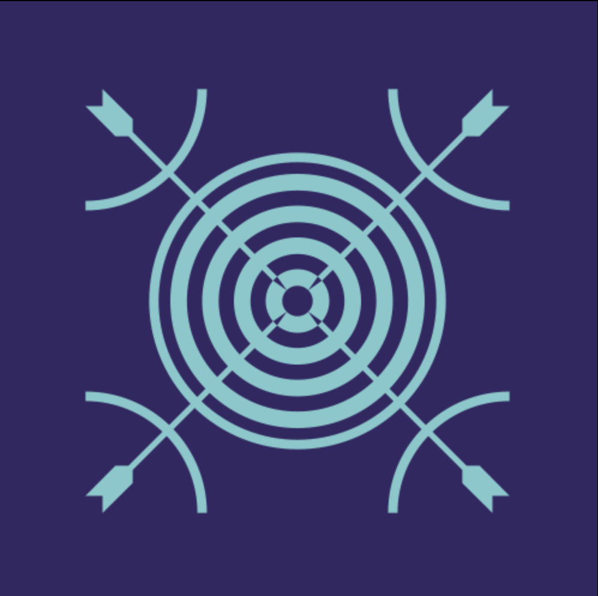
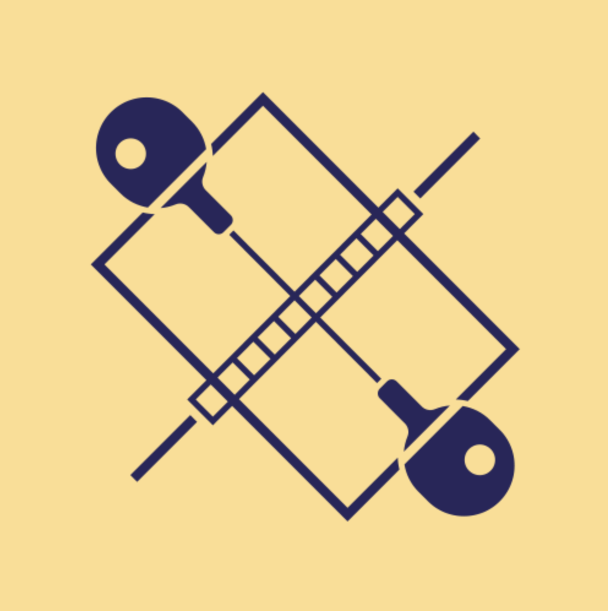
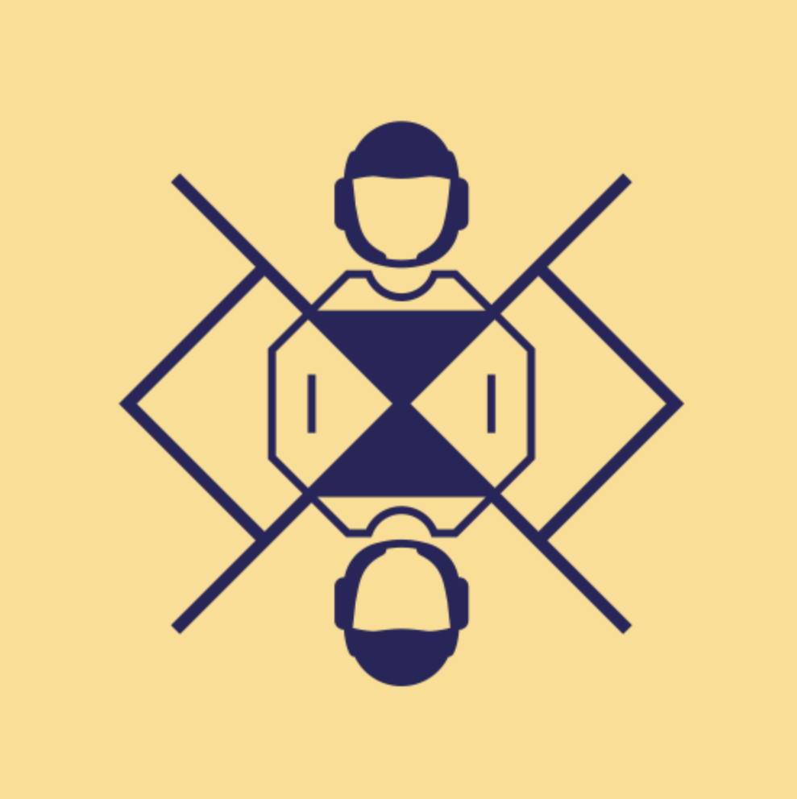
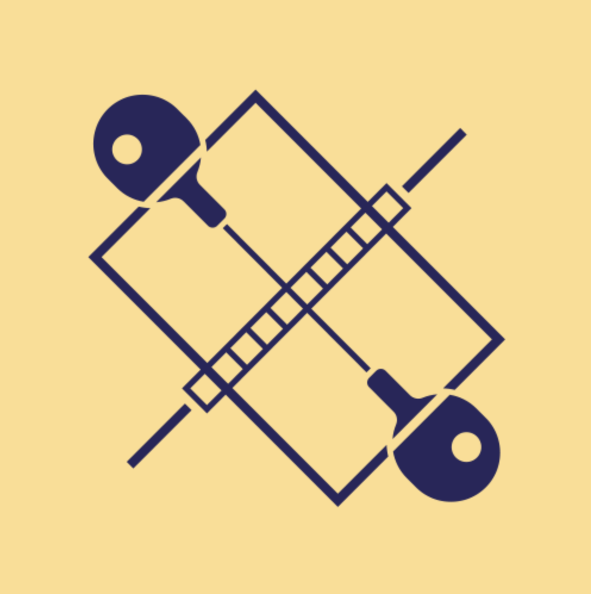
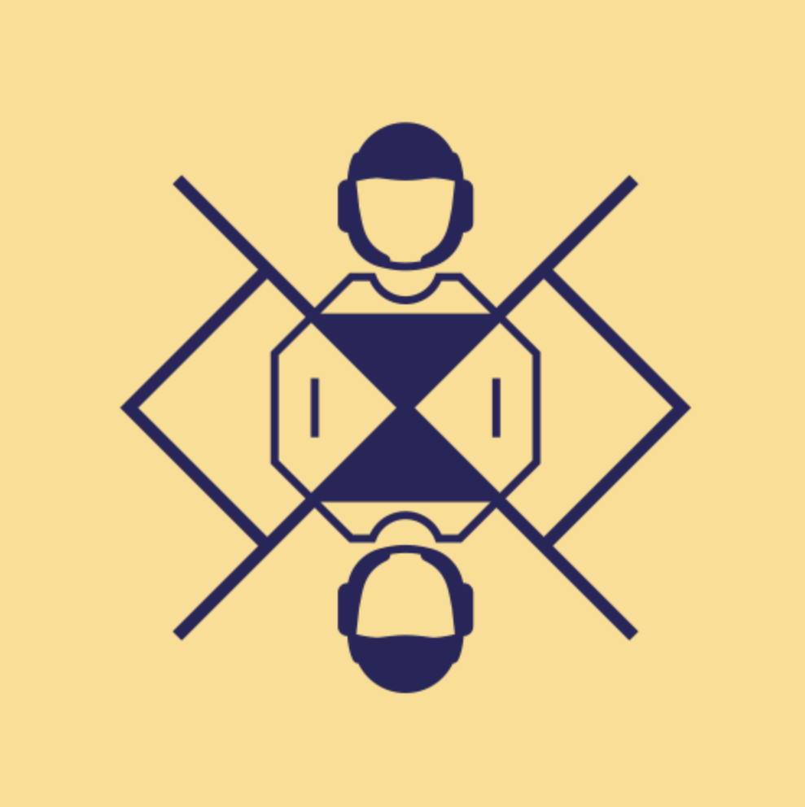
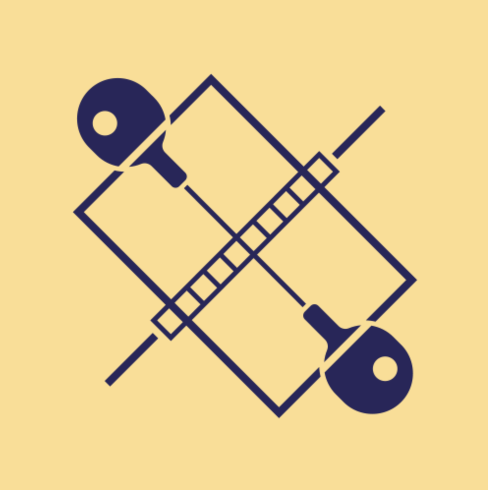
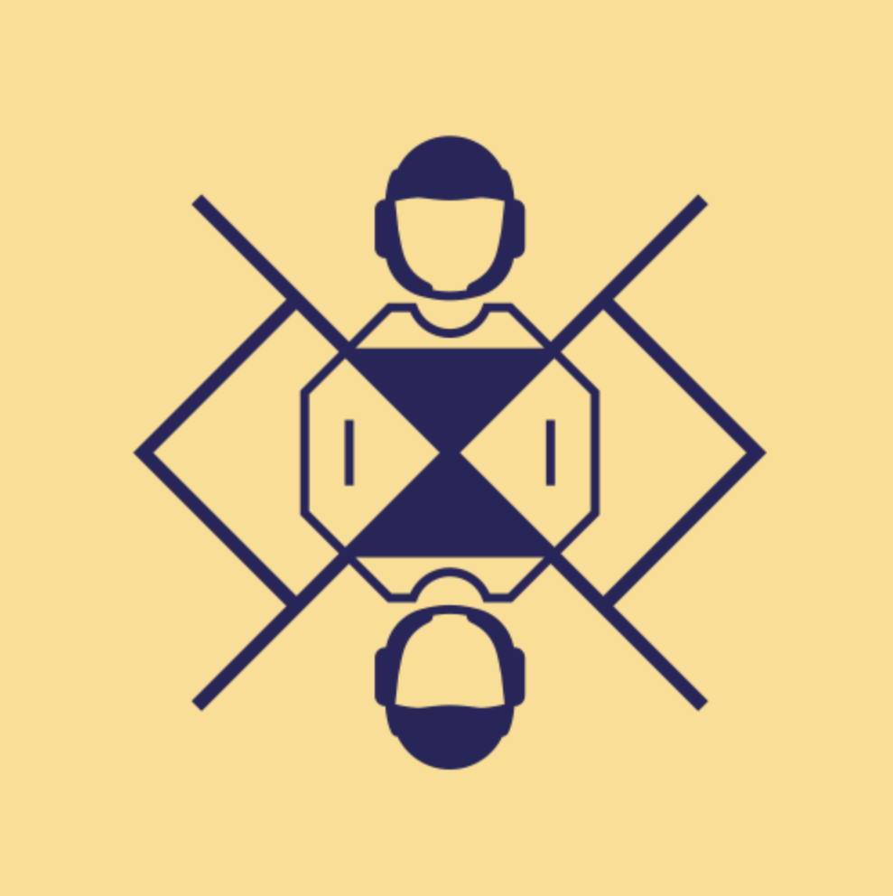

| 賽事 | 金牌 | 銀牌 | 銅牌 | 總計 |
|---|---|---|---|---|
| 2020 東京 | 2 | 4 | 6 | 12 |
| 2016 里約熱內盧 | 1 | 0 | 2 | 3 |
| 2012 倫敦 | 1 | 0 | 1 | 2 |



 





巴黎文化奧運：臺灣館
巴黎文化奧運臺灣館以「自由之聲、島嶼風華、當代新藝、世界共融」為4大主題，邀集22組表演團隊、120多人，將在7月27日到8月10日於園區，安排音樂、戲曲新編、舞蹈、DJ演出等近達60場節目， 讓國際看見青壯新銳的充沛活力，與世界分享臺灣對自由、平等、性別、族群、母語、混種等價值認同的轉化及實踐。


Taiwan

林本然
陳乙慈